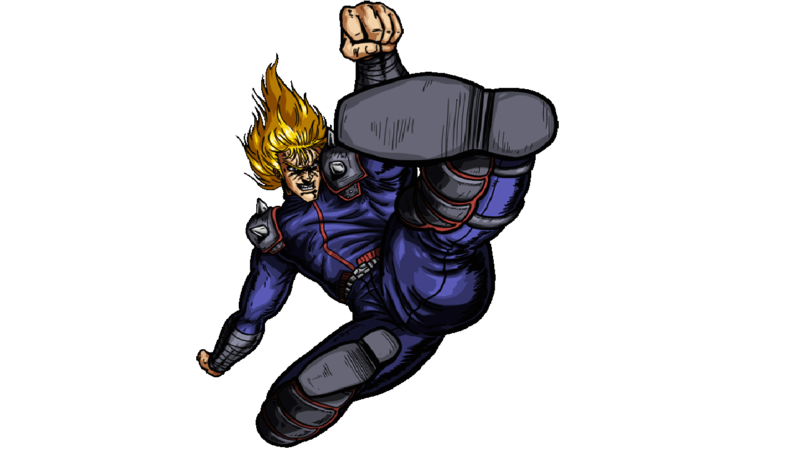

Successore della Scuola di Nanto Koshu Ken, Shin è colui che ha impresso le sette cicatrici sul petto di Kenshiro. Spinto da un amore ossessivo per Julia e manipolato da Jagi, ha costruito la città di Croce del Sud regnando come il terribile "King". La sua tecnica si basa su colpi perforanti portati con le dita e i palmi.